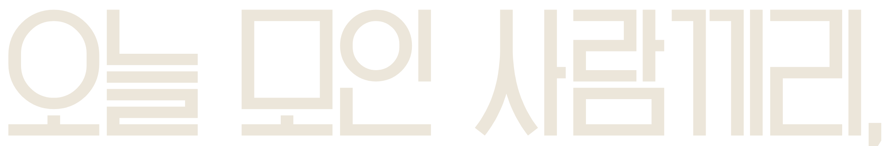
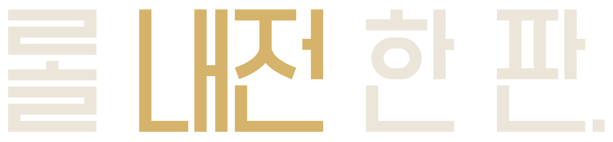

방 하나 만들고 팀만 나누면 준비가 끝납니다. 승패, MVP, 오늘 순위는 앱이 정리하고, 판이 끝나면 위 영상 같은 하이라이트도 만들어 드립니다.
이렇게 진행됩니다
롤 클라이언트 양옆에 작은 창이 붙고, 방에 있는 모두가 같은 화면을 보면서 진행합니다.
방 하나에 다 같이 모입니다
롤에 로그인한 계정으로 바로 들어갑니다. 한 명이 방을 만들면 나머지는 목록에서 골라 들어오면 됩니다.
- 만든 사람이 방장이 되고, 방장이 나가면 남은 사람이 이어받습니다. 비밀번호를 걸 수도 있습니다.
- 방장이 롤 사용자 설정 방을 만들면 방 사람 모두에게 초대가 갑니다.
- 대기실에서 한마디, 롤 이모티콘, 롤과 같은 핑으로 이야기합니다.
팀은 네 가지 방법으로 나눕니다
방장이 방법을 고르고 시작을 누르면 모두의 화면에 팀이 뜹니다. 아수라장과 소환사의 협곡 둘 다 됩니다.
- 랜덤 버튼 한 번 · 밸런스 우리끼리 점수와 롤 랭크로 비슷한 실력
- 팀장 드래프트 줄다리기로 선픽을 정하고 30초씩 번갈아 데려갑니다
- 직접 방장이 배치 · 지난 판 팀 그대로도 버튼 하나
- 팀이 정해지면 롤 방 자리와 디스코드 음성 채널도 1팀·2팀으로 나뉩니다.
끝나면 알아서 기록하고 투표합니다
사용자 설정 게임은 평소대로 하면 됩니다. 게임이 끝나면 승패, KDA, 딜량, 고른 증강까지 저장됩니다.
- MVP는 진 팀이 이긴 팀에서, SVP는 이긴 팀이 진 팀에서 뽑습니다. 매너왕은 모두가 뽑습니다.
- 투표하는 동안 그 판 하이라이트가 만들어집니다(아래).
오늘 누가 제일 잘했는지
그날 판들을 모아 승률, MVP·매너왕 횟수, KDA로 순위를 매깁니다. 하루는 새벽 6시에 넘어갑니다.
- 판마다 누가 어느 팀이었는지 다시 볼 수 있습니다.
- 이름을 누르면 전적, 자주 하는 챔피언, 같이 하면 잘 이기는 팀원과 천적까지 담긴 프로필이 열립니다.
판이 끝나면, 하이라이트
방장 PC가 롤 리플레이로 그 판 최고 장면을 찍어서 다 같이 봅니다. 따로 녹화 프로그램을 켤 필요가 없습니다.
- POTG팟지킬·멀티킬·스틸·딜량으로 그 판 최고 장면을 골라 슬로모션과 자막을 넣어 보여 줍니다.
- UNSUNG HERO숨은 영웅킬이 아니어도 버티기·광역 CC·세이브처럼 판 전체에서 압도적인 활약을 한 사람을 한 번 더 비춥니다.
- MY GAME내 판 카드하이라이트를 기다리는 동안 내 챔피언 일러스트 위에 피해량·KDA·증강·아이템이 정리돼 나옵니다.
- SAVE영상 저장효과와 음악까지 들어간 영상을 mp4로 저장할 수 있습니다. 하이라이트는 칼바람·아수라장 판에서 만듭니다.
그 밖에
소환사의 협곡 내전
아수라장 말고 협곡 5 : 5 내전도 됩니다. 밴픽(토너먼트 교차 선택)과 블라인드(비공개 선택) 중에서 고릅니다.
내전 등급
투데이 내전으로 한 아수라장 내전 기록으로 D부터 SSS까지 등급을 매깁니다. 우리끼리 점수이며 롤 공식 랭크와는 관계없습니다.
증강 가이드
챔피언 선택 때 그 챔피언으로 노려볼 증강 플랜을 보여 줍니다. 우리끼리 쓰고 고치는 위키 방식입니다. 증강이 어떻게 뜨는지 미리 뽑아 볼 수도 있습니다.
디스코드 연동
프로필에 「투데이 내전 · 대기실 · 6명」처럼 상태가 뜨고, 방장이 서버를 연결하면 음성 채널이 1팀·2팀으로 나뉘었다 다시 모입니다.
대기실 채팅 · 핑
한마디와 롤 이모티콘, 롤 스마트 핑을 씁니다. 롤 클라이언트 화면 위에서도 Alt를 누른 채 끌면 핑이 찍힙니다.
같이 한 일반 판
같은 방 사람끼리 칼바람·아수라장 같은 일반 게임에서 한 팀이 되면 그 판도 기록하고 하이라이트를 만듭니다.
깨끗한 대기실
욕설과 비속어는 보내기 전에 가려집니다. 문제가 있으면 신고할 수 있고 운영자가 경고·채팅 금지·이용 정지를 합니다.
가볍고 알아서
롤 클라이언트 양옆에 작은 창 두 개가 붙습니다. 숨기려면 Shift+F7. 업데이트는 앱을 켤 때 알아서 받습니다.
설치
- 운영체제
- Windows 10 · 11
- 필요한 것
- 리그 오브 레전드 클라이언트
- 단축키
- Shift+F7 창 숨기기
- 설치 파일 받기위 다운로드 버튼으로
today-naejeon-setup.exe를 받습니다. - 파란 경고창에서 「추가 정보」 → 「실행」개인이 만든 무료 앱이라 서명이 없어서 이 창이 뜹니다.
- 롤에 로그인로그인해 둔 롤 계정으로 바로 들어갑니다.
- 끝업데이트는 앱을 켤 때 알아서 받습니다.
Microsoft Defender SmartScreen에서 인식할 수 없는 앱의 시작을 차단했습니다. 이 앱을 실행하면 PC가 위험에 노출될 수 있습니다.
추가 정보노란 테두리 순서대로 누르시면 됩니다. 「실행」 버튼은 「추가 정보」를 눌러야 나타납니다.
「스마트 앱 컨트롤이 안전하지 않을 수 있는 앱을 차단했습니다」가 뜨고 「실행」 버튼이 없나요?
Windows 11의 스마트 앱 컨트롤이 켜진 PC입니다. 이 기능은 서명이 없는 앱을 설치·실행·업데이트 모두 막아서, 끄지 않으면 투데이 내전을 쓸 수 없습니다.
today-naejeon-setup.exe
이 창에는 「추가 정보」와 「실행」이 없습니다. 이 창이 떴다면 아래 순서대로 하시면 됩니다.
스마트 앱 컨트롤 설정 열기 →- 위 버튼을 누르고, 「Windows 보안을 여시겠습니까?」가 뜨면 「열기」
- 열린 화면에서 「끄기」를 고르고, 「이 앱이 디바이스를 변경하도록 허용하시겠어요?」가 뜨면 「예」
- 받아 둔 설치 파일을 다시 실행 → 파란 경고창은 위처럼 「추가 정보」 → 「실행」
버튼이 안 열리면: 설정 → 개인 정보 및 보안 → Windows 보안 → 앱 및 브라우저 컨트롤 → 스마트 앱 컨트롤 설정. 최신 Windows 11(24H2·25H2, 2026년 4월 업데이트 이후)은 같은 화면에서 다시 켤 수 있고, 그보다 오래된 Windows는 다시 설치해야 켤 수 있습니다(Windows 화면에 나오는 안내를 따르세요). 바이러스 검사(실시간 보호)는 그대로 켜져 있습니다.
질문
돈이 드나요?
무료이고, 광고도 없습니다.
다 같이 설치해야 하나요?
네. 내전에 참가하려면 각자 앱을 설치하고 롤에 로그인한 뒤 「내전 기록 공개」에 동의해야 합니다. 라이엇 규칙상 사용자 설정 게임 전적은 본인이 동의해야 다른 사람에게 보여 줄 수 있습니다. 동의는 앱 ⚙ 설정에서 언제든 철회할 수 있습니다.
계정 비밀번호를 가져가나요?
아니요. 켜져 있는 롤 클라이언트에서 로그인한 닉네임, 경기 결과, 전적만 받아 옵니다. 비밀번호는 볼 수도 없고 저장하지도 않습니다.
게임이나 계정에 문제는 없나요?
롤 클라이언트에 뜨는 대기방과 경기 결과를 읽기만 합니다. 리플레이는 하이라이트를 찍을 때 방장 PC에서만 엽니다.
예전 내전 사이트 시즌 기록과 같이 쌓이나요?
아니요. 별개 앱이라 기록도 따로 쌓입니다. 기존 내전 오버레이와 같이 깔아 써도 됩니다.
「지금은 자리가 꽉 찼어요」가 떠요.
무료 서버라 동시 접속 인원에 한도가 있습니다. 켜 둔 채 기다리시면 자리가 나는 대로 자동으로 들어갑니다.
디스코드 음성 채널도 팀별로 나눠 주나요?
네. 방장이 앱의 ⚙ 설정 → 디스코드 → 「서버 연결」에서 서버를 고르면 투데이 내전 봇이 들어갑니다. 그 서버에 음성 채널 「1팀」「2팀」과 이름에 「대기」가 들어간 채널을 만들어 두세요. 같은 설정에 서버 초대 링크를 넣어 두면, 그 서버에 아직 없는 방 사람의 대기실에 「들어가기」 버튼이 뜹니다. 팀이 정해지면 대기 채널에 있던 사람이 1팀·2팀 채널로 옮겨지고, 게임이 끝나면 원래 채널로 돌아옵니다. 누가 누군지 알려면 각자 PC 디스코드 앱을 켜 두어야 합니다(웹 디스코드는 안 됩니다).
디스코드 봇은 어떤 권한을 갖나요?
채널 보기, 음성 채널 연결, 멤버 이동 세 가지뿐입니다. 채팅을 읽거나 쓰지 않고, 팀이 정해질 때와 게임이 끝났을 때만 사람을 옮깁니다. 서버에 넣으려면 그 서버의 관리 권한이 필요합니다.
어떤 정보가 저장되나요?
롤 게임 이름과 태그, 라이엇 계정 고유 번호, 투데이 내전으로 한 경기의 결과(팀, 챔피언, 킬·데스·어시스트, 피해량, 증강 등)와 투표 결과가 저장됩니다. 디스코드를 연결한 사람은 디스코드 사용자 번호와 이름도 저장됩니다. 서버는 Google Firebase(싱가포르)이고, 저장된 기록은 투데이 내전 앱의 순위와 프로필 화면에 나옵니다. 경기 기록은 순위와 프로필에 쓰기 위해 계속 남기고, 팟지 영상과 하이라이트 재료는 3일 뒤 지워집니다. 접속 중 표시는 앱을 끄면 지워집니다.
내 기록을 지우고 싶어요.
GitHub 문의 게시판에 롤 게임 이름과 태그를 남겨 주세요. 확인한 뒤 그 계정의 기록과 디스코드 연결 정보를 지웁니다.
롤 화면 모드가 창 모드로 바뀌어 있어요.
팟지를 찍는 동안(방장 PC) 앱이 롤 화면 모드를 잠깐 바꿉니다. 끝나면 원래대로 돌려놓고, 그사이 앱이 꺼졌다면 다음에 앱을 켤 때 돌려놓습니다. 바로 고치려면 롤 설정에서 화면 모드를 다시 고르면 됩니다.
컴퓨터를 켜면 자동으로 켜지나요?
네. 윈도우가 시작될 때 창 없이 작업 표시줄 아이콘으로만 켜지고, 롤 클라이언트를 켜면 그 옆에 나타납니다. 끄려면 앱의 ⚙ 설정이나 작업 표시줄 아이콘 메뉴에서 「윈도우 시작할 때 자동 실행」을 끄면 됩니다.
「스마트 앱 컨트롤이 … 차단했습니다」가 떠서 설치가 안 돼요.
Windows 11의 스마트 앱 컨트롤이 켜져 있으면 서명이 없는 앱은 「실행」 버튼 없이 막힙니다. 개인이 만든 무료 앱이라 서명이 없습니다. 설치 안내의 「스마트 앱 컨트롤 설정 열기」로 이 기능을 끈 뒤 설치 파일을 다시 실행하세요. 최신 Windows 11(24H2·25H2, 2026년 4월 업데이트 이후)은 나중에 같은 화면에서 다시 켤 수 있고, 그보다 오래된 Windows는 다시 설치해야 켤 수 있습니다. 바이러스 검사는 그대로 켜져 있습니다.
Mac에서도 되나요?
지금은 Windows만 지원합니다.